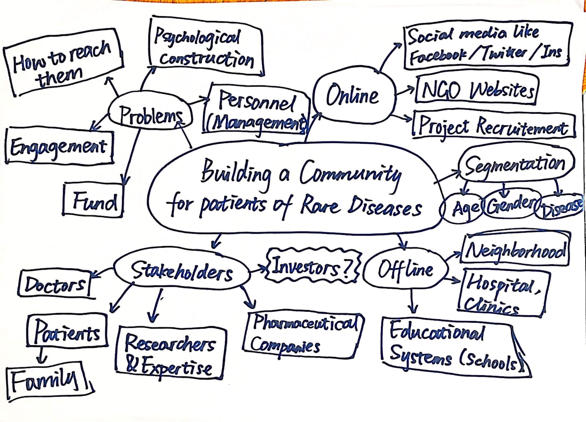
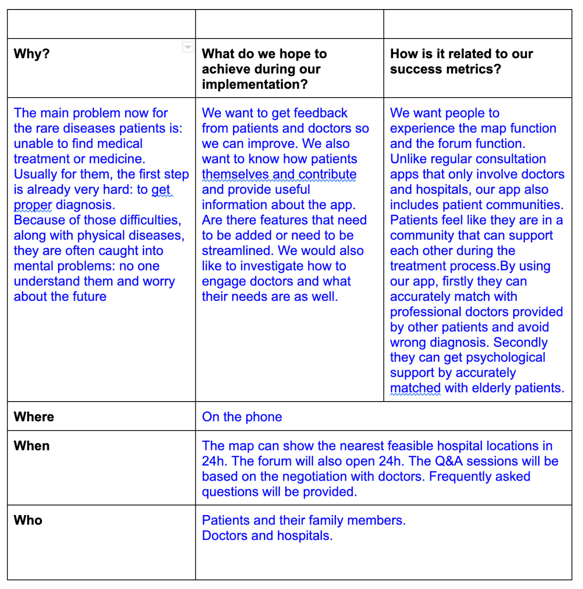

In order to allow more patients to receive a definitive diagnosis, bring patients closer to medical resources, and improve their psychological well-being, we created an online mobile app community to provide them with information about doctors and hospitals, medical resources, and an interactive platform for making new friends.
In the future, we look forward to partnering with pharmaceutical companies and bringing in donations so that patients can have access to medical care and medication. At the same time, we will pay more attention to patient privacy issues so that they can feel truly reassured and be hopeful for their future.
Fact Pack: What’s the existing patient community looks like
General Information:Among the patients interviewed in the 2019 Comprehensive Social Survey of Rare Diseases in China, 6,443 were male, accounting for 49%, and 6,792 were female, accounting for 51%. Nearly 90% of the patients are under the age of 50, and more than half are under the age of 18. Among the 6,598 adult patients, more than a quarter of them had bachelor's degree or higher education (25.9%), college diploma patients accounted for 18.1%, and completed technical secondary school accounted for 11.4%.
Relationship: The research also shows that the social support available to primary caregivers is even significantly lower than that available to patients. The focus on primary caregivers is urgent.
In the documentary film "Born Extraordinaire - Profiles," the director finds that those with rare diseases are still in a mode of living a negative, repetitive, single life every day. She feels that many people with rare diseases over-exaggerate the label of rare disease patient and feel that all their problems are attributable to their rare disease. This causes their mental problem.
This is a documentary made by patients themselves. In this documentary, it shows that the patients rely highly on their family. So family members’ community connection is as important as patients themselves. How did the patients learned to make films? What other people involved?
What are the challenges
Rare diseases are far more than just medical problems; the system of protection from medical, educational, employment, psychological support, and social cognitive aspects is a complex system project.
Summary
Diagnosis
The unfortunate reality is that rare diseases too often go undiagnosed for extended periods of time because patients, families and physicians have limited awareness of the disease and symptoms may not always be evident to healthcare providers who have never encountered it.
Delays in Diagnosis
Children typically wait six to eight years before being diagnosed. Delays in diagnosis can lead to inappropriate disease management as well as disease progression.
Misdiagnosis
Patients are often misdiagnosed when symptoms present similar to another disease and a misdiagnosis can lead to unsuitable interventions for the underlying disorder. In more than 40% of cases, patients receive a misdiagnosis more than once, as too often, “rare” can mean “off the radar” to healthcare providers.
Access to Quality Medical Care
Most rare diseases are treated by numerous specialists such as geneticists, neurologists, endocrinologists, dermatologists, etc. However, there are few places in which to seek specialized medical care for rare diseases, and due to the rare nature of these conditions, there may be NO specialists treating your specific rare disease. You will also be responsible for researching and coordinating your care, appointments, and therapy, as there is likely not a patient advocate, social worker, or anyone else to help point you in the right direction. Even if a specialist exists for your particular condition, it can be costly to see them. You must arrange for your own travel and expenses and Medicaid often places restrictions on where you may seek care.
Isolating
Individuals and families affected by rare disease often face isolation. You may be one of hundreds or just a handful of individuals in the entire world with your particular condition. There may be nobody in your area, your state, or even your country with the same condition. Many people seek comfort, validation, and support through online community support groups, but this does not replace connection with people in your own community.
Lack of Public Awareness
The general public is largely unaware of the issues that face the rare disease community. They are unaware of the challenges the rare disease community experience in accessing medical care, treatments, and supplemental income. They are unaware of how difficult it can be to coordinate care and the stress this places on diagnosed individuals and caregivers. Most people are unaware that 80% of rare conditions have a genetic origin and that 50% of rare disease patients are children. Many are shocked to discover that scientific advances in rare disease research positively impacts treatments for other more common medical conditions. And most importantly, the general public is unaware that rare is not rare….that 1 in 10 individuals are diagnosed with rare disease, cumulatively impacting more people than cancer and AIDS combined.
Inspiration Gallery
RareConnect
RareConnect is an online social network, created by Eurordis, which aims at connecting patients, families affected by a rare disease. The website is organized into disease specific communities which facilitate support and access to validated information, and allow patients and families share experience on their disease, on quality of life, on social issues. A set of features is implemented : communication tools like forums and private discussion lists, medical articles written by experts, texts from patients and families, testimonies using text, photos or videos, latest news from research, events concerning the community or rare diseases at large. The website is available in thirteen languages right now.
Share4Rare
The Share4Rare project includes the creation of a large social network that, unlike conventional forums, incorporates mathematical algorithms, such as those used by dating platforms. These will help to connect users based on the information they provide in their profile and it will make possible for people to direct their queries to those who are most likely to be able to provide an answer. Share4Rare will also help patients and carers affected by the same disease or symptoms to connect so they can support each other.
Chinese Organization for Rare Disorders (CORD)
CORD is a non-profit organization dedicated to the field of rare diseases, founded in 2013 by Mr. Rufang Huang. It is committed to enhancing communication and cooperation among rare disease patient groups, rare disease organizations, medical professionals, pharmaceutical companies and governmental agencies, strengthening public understanding of rare diseases, improving access to rare disease drugs, promoting policies related to rare diseases, carrying out international exchange and cooperation in the field of rare diseases, and promoting the development of the cause of rare diseases in China.
Mindmap
This is a mindmap we draw base on the analysis of different stakeholders and different party engage in this process.
Interview I: with my friend Yandong and
Interview II: In class interview with rare desease helping organization leaders
Details are documented in this doc. Since we targeting Rare Desease Patients in China, our questions are designed using Chinese, but the summary is in English.Interview Summary
Identity Familiarity
"The most important psychological building that new patients need to do is to achieve identity and identity familiarity, and it is important to provide them with a role model in this process. This role model is usually a successful person among the patients who can serve as an inspiration to others. Furthermore, one of the great innate strengths of the patient is their ability to empathize. Other people don't experience the same pain when they are sick, and it's only the patients who can empathize with each other."
Repetitive Labour
Tech-savvy volunteers are extremely needed for today's rare disease communities to help build an online platform to provide frequently asked questions and answers and also relevant information for people to search for in order to reduce repetitive labor. Also, communities need to host online networking events to bring patients and other stakeholders closer together. Moreover, old patients need to play their role in a most effective way to provide new patients with as much help as they need.
Helpful Method
It would be better if patients themselves can learn some basic skills like managing wechat official accounts or filming. On the patient's side This might help them build identity recognition within their community by making their own effort and not rely so much on others’ help. On the volunteer’s side, tech-savvy workers are extremely needed to build platforms or apps and may be hired as a paid job . However, other volunteers like managing wechat official accounts without payments maybe are harder to find than we think.
Right Doctors
Another point is it’s very important to match the right doctors. In the interview, Yandong told me that he visited 5 hospital before he was finally diagnosed with DM. He also went from Shanghai to Beijing for medical treatment. Finding a doctor who understands rare diseases is really important for patients, saving money and resources. Also, finding the right doctors help ease the mental burden. Before being diagnosed, the doctors all told him “you don’t have any disease”, which made him feel confused and helpless.
Root Problems
Base on our researches, we analyized the root problem
Problem 1
New patients cannot find the right doctors to diagnose their diseases and the resources they need.
Problem 2
Patients’ psychological issues are needed to be solved.
Problem 3
Old patients and other professionals are doing repetitive work to help new patients.
Experiment
Match
Help patients to match with the right doctors they are looking for and with the experienced patients with the same disease
Efficiency
Reduce repetitive labor and unnecessary costs of patients:
- An algorithm that summarizes the answers to the previous questions
- Contact with the knowledgeable doctor (like the google map we see today)
What-if Questions:
Try to improve the solution, we used what if questions
What if doctors need payback after answering patients’ multiple questions?
- With the patient's permission, provide the doctor with the patient's contact information that can be used as a research participant in the doctor's rare disease study.
- Put ads in the app for hospitals that patients can visit, with doctors specializing in rare diseases.
What if patients can contribute to our map?
- Open an entry where patients can give suggestions for improvements. We will frequently check those suggestions and update the details of our app.
- Or teach patients to build buttons and add information to the app.
Potential Solutions:Online Community App
Implementation: Functions
1. Map: Patients can see which hospitals are closest to them. Click on those red dots to also check the doctors’ qualifications, resumes and research papers.Map:Patients can see which hospitals are closest to them. Click on those red dots to also check the doctors’ qualifications, resumes and research papers.
2. Forum: Patients can post their information to find those who have similar diseases.
3. Q&A: Held by the doctors in a certain time to answer patients’ questions.
4. Message and suggestion: Patients can enter their suggestions.
5. Collection: People can pin the post they like and the doctors’ information.
Pros:
1.It reduced repetitive labor of volunteers answering similar questions over and over again as frequently asked questions are provided.
2.It helps match patients with the right doctor to get accurate diagnoses.
3.It helps match new patients with the elder ones to get psychological support and exchange medicine information.
Cons:
1.Doctors need to focus on the current hospital system and this online community which causes double efforts.
2.The app relies on a community large enough to match new patients with certain doctor and elder patients.
3.Cannot solve the root problem of no treatment for those rare diseases.
Possible Scenarios:
What if patients don’t know how to get access to our solution?
- Post information about our app to existing rare disease communities and encourage patients and their family to join our online community.
What if we cannot reach out to enough doctors to join our community?
- Go to Medical Rare Disease Exchange Meetings to promote our app and encourage doctors to participate.
What if doctors need payback after answering patients’ multiple questions?
- With the patient's permission, provide the doctor with the patient's contact information that can be used as a research participant in the doctor's rare disease study.
- Put ads in the app for hospitals that patients can visit, with doctors specializing in rare diseases.
Demo Proposal Chart
Feedback from User Testing
Patient One:
- Displaying two sessions above the Q&A session is not convenient if there is only a fixed period of time to consult an expert in case of an emergency.
- It would be convenient to have a channel where patients can directly talk to doctors. Open a channel which provides the doctor’s contact number (like the QR friend code enabling the direct contact). It would allow patients to talk directly to their doctors.
Patient Two:
- Q&A session appointment function needs improve.
- About Us: Privacy Policy: scroll page needs improve.
- Introduction + Privacy of our app in a new page.
- Users need to read the Privacy Policy before they can log in.
Patient Three:
- Needs a introduction page or name: don’t know what this app is about
- Add a platform that allows patients to submit medical history and documentation of their condition to facilitate physician judgment and doctor-patient communication, not the categories already exemplified. Let the patient choose to join the group because he may not know what his illness is
Finalized Version:
Poster for project show